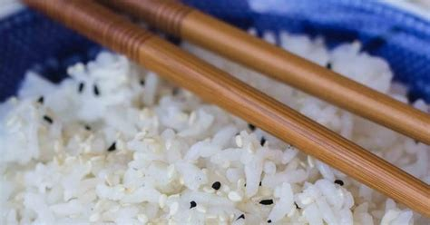

Recipe: Ajinomoto Rice

Rice, the staple of Asians.
Rice with Ajinomoto flavouring. Fast, easy and cheap. Authentic Taste.
Humble carbs for the regular folk.
Ingredients
- 1 Cup of Rice
- 1 Packet of Ajinomoto
- Water (Use the tip of index finger to measure by touching base of rice cooker, up to 3/4 from tip to upper segment)
Steps
- Wash Rice via rinsing twice.
- Add cup of rice into Rice Cooker.
- Add Water.
- Turn on Rice Cooker, set to Rice.
- Wait around 30 to 40 minutes cooking process to finish.
- Add packet of ajinomoto to rice, and mix.
- The meal is ready. Enjoy!